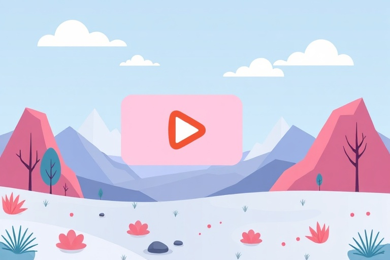

এআই দিয়ে ভিডিও তৈরির সহজ গাইড: নতুনদের জন্য সম্পূর্ণ নির্দেশিকা
Category: video | Language: bn
বর্তমান সময়ে ভিডিও এডিটিং বা গ্রাফিক ডিজাইনের কোনো বিশেষ জ্ঞান ছাড়াই চমৎকার ভিডিও তৈরি করা সম্ভব হচ্ছে কৃত্রিম বুদ্ধিমত্তা বা এআই (AI) এর মাধ্যমে। এই প্রযুক্তি মূলত সেই সব মানুষদের সাহায্য করে যারা ইউটিউব, সোশ্যাল মিডিয়া বা ছোট ব্যবসার জন্য দ্রুত এবং কম খরচে কন্টেন্ট তৈরি করতে চান। এআই ভিডিও জেনারেশন এমন একটি পদ্ধতি যেখানে আপনি কেবল কিছু লিখে দিলেই কম্পিউটার সেই অনুযায়ী দৃশ্য তৈরি করে দেয়। এটি সময় বাঁচানোর পাশাপাশি সৃজনশীলতার নতুন দুয়ার খুলে দিয়েছে, যা আগে সাধারণ মানুষের নাগালের বাইরে ছিল। এই নিবন্ধে আমরা আলোচনা করব কীভাবে একজন নবীন হিসেবে আপনি এই প্রযুক্তি ব্যবহার করে নিজের ভিডিও তৈরি শুরু করতে পারেন।
এআই ভিডিও তৈরির ক্ষেত্রে কয়েকটি মূল ধারণা পরিষ্কার থাকা জরুরি। প্রথমটি হলো 'টেক্সট-টু-ভিডিও' (Text-to-Video), যেখানে আপনার লেখা বর্ণনার ভিত্তিতে ভিডিও তৈরি হয়। দ্বিতীয়টি 'ইমেজ-টু-ভিডিও' (Image-to-Video), যেখানে একটি স্থির ছবিকে গতিশীল করা হয়। এছাড়া রয়েছে 'এআই অ্যাভাটার' (AI Avatar), যা মূলত মানুষের মতো দেখতে একটি ডিজিটাল চরিত্রকে দিয়ে আপনার স্ক্রিপ্ট বলিয়ে নেয়। এই প্রযুক্তিগুলো শিখতে হলে আপনাকে জটিল কোডিং জানতে হবে না, বরং কীভাবে সঠিক নির্দেশ বা 'প্রম্পট' দিতে হয়, তা জানলেই চলবে। প্রতিটি টুলের ইন্টারফেস আলাদা হতে পারে, তবে মূল কাজের ধরন প্রায় একই থাকে।
ভিডিও তৈরির জন্য সঠিক টুল নির্বাচন করা অত্যন্ত গুরুত্বপূর্ণ। বর্তমানে রানওয়ে (Runway Gen-2), পিকা ল্যাবস (Pika Labs) এবং হেজেন (HeyGen) এর মতো প্ল্যাটফর্মগুলো বিশ্বজুড়ে বেশ জনপ্রিয়। ক্যানভা (Canva)-র মতো সাধারণ ডিজাইন টুলের মধ্যেও এখন এআই ভিডিও তৈরির ফিচার যুক্ত হয়েছে। মনে রাখবেন, এই টুলগুলোর বেশিরভাগই সম্পূর্ণ ফ্রি নয়। সাধারণত তারা নতুন ব্যবহারকারীদের কিছু ফ্রি 'ক্রেডিট' দেয়, যা শেষ হয়ে গেলে মাসিক বা বার্ষিক সাবক্রিপশন নিতে হয়। তাই শুরু করার আগে দেখে নিন আপনার প্রয়োজন এবং বাজেট অনুযায়ী কোন টুলটি সবচেয়ে উপযোগী। ভারতের ব্যবহারকারীরা অনেক ক্ষেত্রে ক্যানভা বা লুমা ড্রিম মেশিন (Luma Dream Machine) দিয়ে শুরু করতে পারেন কারণ এগুলি ব্যবহার করা বেশ সহজ।
একটি সফল এআই ভিডিও তৈরির প্রক্রিয়াটি কয়েকটি ধাপে বিভক্ত। প্রথমে আপনাকে একটি পরিষ্কার চিত্রনাট্য বা আইডিয়া তৈরি করতে হবে। এরপর সেই আইডিয়াকে ছোট ছোট প্রম্পটে ভাগ করতে হবে। উদাহরণস্বরূপ, আপনি যদি একটি প্রাকৃতিক দৃশ্য চান, তবে সেটি একটি প্রম্পটে লিখুন। টুলটি ভিডিও জেনারেট করার পর সেটিকে ডাউনলোড করে কোনো সাধারণ ভিডিও এডিটর (যেমন CapCut বা InShot) দিয়ে মিউজিক এবং সাবটাইটেল যোগ করুন। একবারে নিখুঁত ভিডিও না-ও আসতে পারে, তাই কয়েকবার চেষ্টা করা বা প্রম্পট পরিবর্তন করা প্রয়োজন হতে পারে। মনে রাখবেন, এআই ভিডিওর মান অনেকটাই নির্ভর করে আপনি কতটা স্পষ্ট বর্ণনা দিচ্ছেন তার ওপর।
এআই-কে সঠিক নির্দেশ দেওয়া বা 'প্রম্পট ইঞ্জিনিয়ারিং' হলো এই কাজের আসল চাবিকাঠি। একটি ভালো প্রম্পটে বিষয়ের বর্ণনা, কাজের ধরন, ক্যামেরার অ্যাঙ্গেল এবং আলোর বর্ণনা থাকা উচিত। যেমন, শুধু "একটি বিড়াল" না লিখে লিখুন "একটি ছোট বিড়াল রোদেলা জানলার ধারে বসে আছে, সিনেমাটিক লাইটিং, ফোর-কে রেজোলিউশন"। যত বিস্তারিত লিখবেন, এআই তত নিখুঁতভাবে আপনার ভাবনাকে পর্দায় ফুটিয়ে তুলতে পারবে। তবে অতিরিক্ত জটিল শব্দ ব্যবহার না করে সহজ ও স্পষ্ট ইংরেজি বা সমর্থিত ভাষা ব্যবহার করা ভালো। অনেক সময় টুলগুলো ভিডিওর স্টাইল (যেমন- অ্যানিমেশন বা রিয়েলিস্টিক) বেছে নেওয়ার অপশনও দেয়, যা ব্যবহার করা বুদ্ধিমানের কাজ।
চলুন একটি বাস্তব উদাহরণ দেখা যাক। ধরুন আপনি আপনার নতুন কফি শপের জন্য একটি বিজ্ঞাপন বানাতে চান। আপনি হেজেন (HeyGen)-এর মতো একটি টুল ব্যবহার করে একজন এআই অ্যাভাটার বেছে নিলেন। এরপর আপনার দোকানের অফারগুলো টেক্সট হিসেবে লিখে দিলেন। এআই সেই লেখাটিকে মানুষের মতো কণ্ঠে পাঠ করবে এবং হাত-মুখ নেড়ে কথা বলবে। ব্যাকগ্রাউন্ডে আপনি আপনার দোকানের কিছু সুন্দর ছবি বা ভিডিও ক্লিপ যোগ করে দিলেন। মাত্র ১০-১৫ মিনিটের মধ্যে একটি পেশাদার মানের বিজ্ঞাপন তৈরি হয়ে যাবে, যা আগে করতে কয়েক দিন সময় লাগত। এই ভিডিওটি আপনি সরাসরি ইনস্টাগ্রাম রিলস বা ফেসবুক পেজে শেয়ার করতে পারবেন।
নতুনরা প্রায়ই কিছু ভুল করে থাকেন যা এড়িয়ে চলা উচিত। সবচেয়ে বড় ভুল হলো এআই-এর ওপর সম্পূর্ণ নির্ভর করা। অনেক সময় এআই ভিডিওতে মানুষের আঙুল বা চলাফেরা অদ্ভুত দেখাতে পারে, যাকে 'হ্যালোসিনেশন' বলা হয়। এই ত্রুটিগুলো খেয়াল না করে ভিডিও পোস্ট করলে তা অপেশাদার দেখায়। এছাড়া, এআই দিয়ে তৈরি ভিডিওর টাইমিং অনেক সময় ঠিক থাকে না, তাই এডিটিংয়ের সময় বাড়তি মনোযোগ দেওয়া প্রয়োজন। কপিরাইট আইনের কথা মাথায় রেখে অন্যের ছবি বা কন্ঠ অনুমতি ছাড়া ব্যবহার করা থেকে বিরত থাকুন। সবসময় চেষ্টা করুন ভিডিওতে নিজের কিছু সৃজনশীলতা যোগ করতে যাতে সেটি যান্ত্রিক না মনে হয়।
নিরাপত্তার খাতিরে এআই ব্যবহারের সময় সতর্ক থাকা জরুরি। বিশেষ করে কারও চেহারা বা কণ্ঠ নকল করে 'ডিপফেক' ভিডিও তৈরি করা কেবল অনৈতিক নয়, তা আইনত দণ্ডনীয় অপরাধ। এছাড়া অনেক ওয়েবসাইট এআই টুলের নামে আপনার ব্যক্তিগত তথ্য বা ক্রেডিট কার্ডের ডিটেইলস চুরি করতে পারে, তাই সবসময় নামী এবং বিশ্বস্ত প্ল্যাটফর্ম ব্যবহার করুন। মনে রাখবেন, এআই একটি সহায়ক টুল মাত্র, এটি আপনার সৃজনশীলতাকে প্রতিস্থাপন করতে পারে না। আজই একটি ফ্রি টুল (যেমন Leonardo.ai বা Canva Magic Media) দিয়ে আপনার প্রথম ৫ সেকেন্ডের ভিডিও তৈরি করে যাত্রা শুরু করুন। ছোট ছোট পরীক্ষা-নিরীক্ষাই আপনাকে ভবিষ্যতে দক্ষ এআই ভিডিও ক্রিয়েটর হিসেবে গড়ে তুলবে।